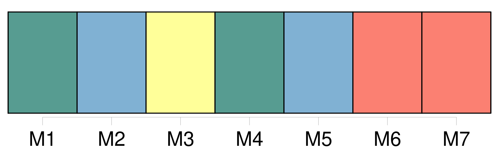
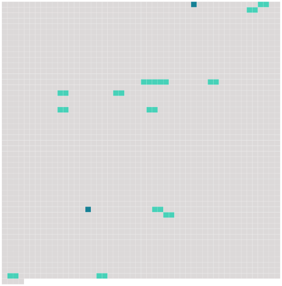

Longueur nb maillons : 14 mentions |
 |
Les rejets ponctuels dans la zone maritime, et les émissions dans l'eau ou dans l'air, qui atteignent la zone maritime et peuvent lui porter atteinte, sont strictement soumis à [autorisation] ou à réglementation par les autorités compétentes des parties contractantes.
[Ces autorisations] ou réglementations mettent en œuvre, notamment, les décisions pertinentes de la Commission qui lient la partie contractante concernée. [1 phrases]
Les parties contractantes mettent en place un dispositif de surveillance et de contrôle réguliers permettant à leurs autorités compétentes d'évaluer le respect [des autorisations] et des réglementations relatives aux émissions dans l'eau ou dans l'air. [13 phrases]
Les parties contractantes font en sorte : [1 phrases]
[Toute autorisation] ou réglementation visée au paragraphe 1 ne permet pas l'immersion de navires ou d'aéronefs contenant des substances qui créent ou sont susceptibles de créer des risques pour la santé de l'homme, des dommages aux ressources vivantes et aux écosystèmes marins, des atteintes aux valeurs d'agrément, ou des entraves aux autres utilisations légitimes de la mer. [2 phrases]
Article 5 [Cette autorisation] ou cette réglementation est conforme aux critères, aux lignes directrices et aux procédures pertinents et applicables, adoptés par la Commission conformément à l'article 6 de la présente annexe. [27 phrases] L'utilisation, le rejet ou l'émission par des sources offshore de substances qui peuvent atteindre et affecter la zone maritime est rigoureusement soumis à [autorisation] ou à réglementation par les autorités compétentes des parties contractantes.
[Ces autorisations] ou réglementations mettent notamment en œuvre les décisions, recommandations et autres accords pertinents et applicables, qui auront été adoptés en vertu de la convention. [1 phrases]
Les autorités compétentes des parties contractantes mettent en place un système de surveillance et de contrôle afin d'évaluer le respect [des autorisations] ou des réglementations prévues au paragraphe 1 de l'article 4 de la présente annexe. [13 phrases]
Article 8 [Cette autorisation] ou cette réglementation est conforme aux critères, aux lignes directrices et aux procédures pertinents et applicables adoptés par la Commission conformément au point d ) de l'article 10 de la présente annexe. |
 |
Il est possible de télécharger la ressource sur la page Ortolang |
Si vous avez des questions ou vous voyez des erreurs, merci d'envoyer un mail à silvia.federzoni89@gmail.com |